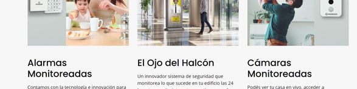

Proceso de diseño
INSPIRACIÓN Y DESARROLLO
El diseño web está inspirado en sitios de seguridad, en los cuales se buscaron referencias sobre qué secciones no podrian faltar, manejo de páginas internas, solicitudes de formularios y demás. Sin embargo, se tomaron solo algunas ideas y otras fueron descartadas y reemplazadas por otras personalizadas con el personaje y la tematica de la película.

PALETA CROMÁTICA